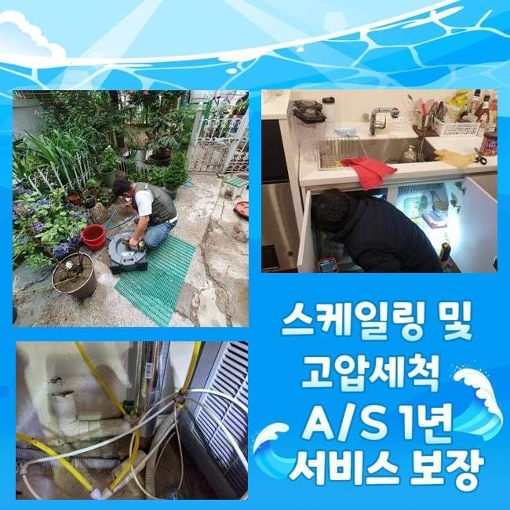
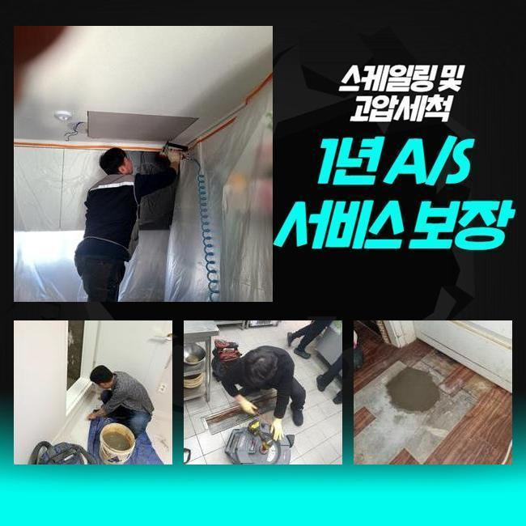
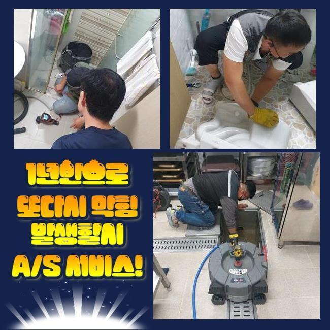
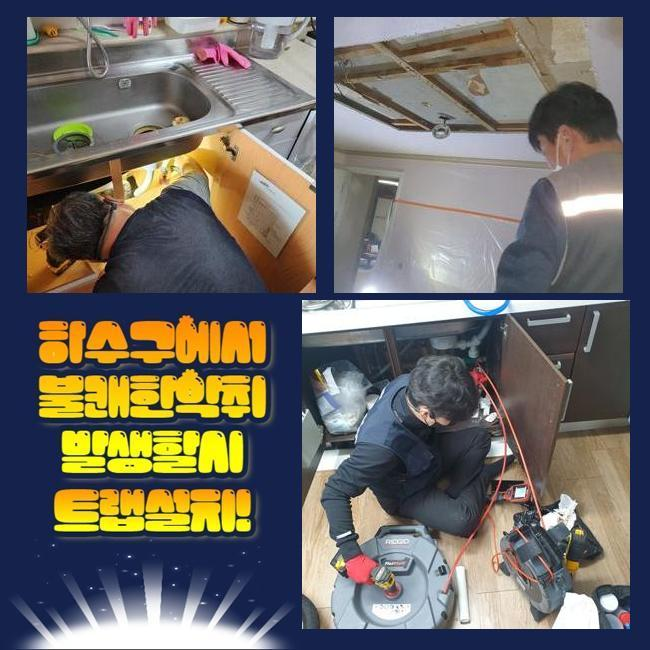
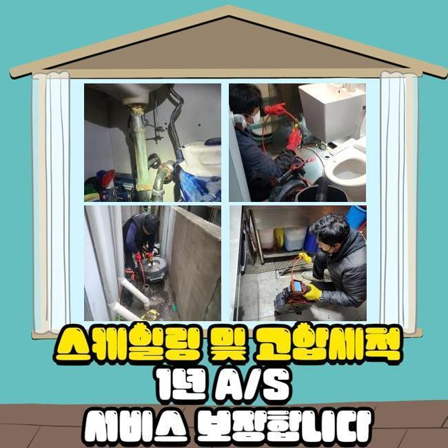
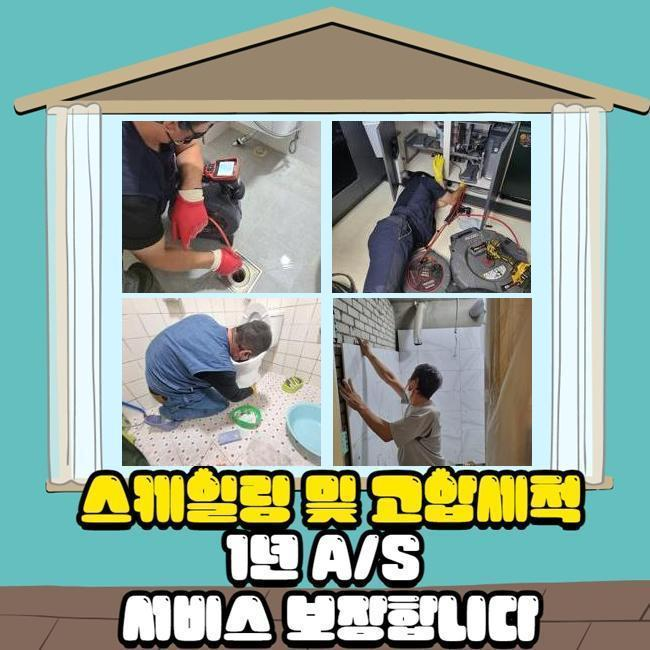
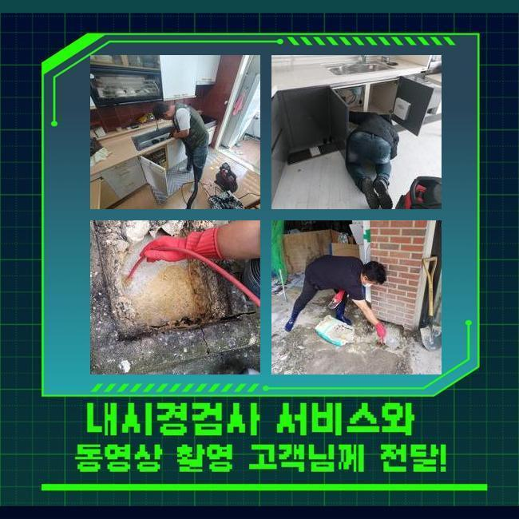

🏠 대야동세탁기배수구막힘 죽율동 횡주관청소 설비공사
용인 하수구막힘 전문 시공 후기

📋 작업 개요
- 위치: 용인
- 서비스 유형: 하수구막힘, 배관막힘, 뚫는업체, 배관청소, 고압세척, 설비공사, 악취차단
- 작업 일시: 2025. 1. 29. 23:59
- 업체명: 하수구수사대 (010-5615-2118)
🔍 문제 상황
대야동세탁기배수구막힘 죽율동 횡주관청소 설비공사
저희팀은 배수관과 관계된 여러종류의 작업을 처리하는 회사입니다
관련된 인력과 장비를 갖추고 의뢰인분이 직면하신 고장상황에 즉각 대처해드려요
금번엔 주방시설의 배수구막힘 처치 과정을 소개해드리려 합니다
지난주 문의하신 장소는 음식점이 모여있는 건물이었는데요
주방의 배관이 차단되었고 설상가상으로 화장실쪽의 통수도 안되는 형국이었죠
해당위치에서 일을 마친 근무자가 즉시 내방드렸고 적절한 방법을 행하기로 결정했어요
주방배수구 정체와 화장실의 배수구막힘이 발발한 데는 닭요리를 전문으로 하는 곳이었죠
주방공간에선 다양한 음식재료들을 다루기에 관막힘이 자주 나타납니다
이렇기에 식당을 운영하시는 분들께선 그와 관계된 여러종류의 조처를 실행하시곤 하죠
평상시에 청결하게 사용하였더라도 어느날 갑자기 큰 이물이 유입된다면 체증이 일어나기 쉬우므로 관리가 수월하지 않아요
금번 내방한 곳은 어떠한 이유로 정체가 발현된건지 밀도있게 체크해보기로 했어요
우선 주방쪽부터 점검하기로 했죠
한식집은 일반 가정의 주방과 다르게 트렌치설비의 크기도 굉장히 큰데요

🔎 원인 분석
💡 전문가 진단: 정밀 진단 장비를 사용하여 슬러지의 고착 여부를 판명하고 타격/세척 작업을 실시했습니다.
그러하기에 처리가능한 수도량도 늘어나게 되는건데요
그렇기 때문에 통상적인 주거장소의 배수기능 테스트를 기준해서 이상을 결정해선 안되고 그것에 적합한 물의양을 넣어서 명확히 문제를 체크해야해요
이렇게 배수테스트를 안하고 대충 넘어간다면 몇주 못가서 정체가 재발하기 쉽습니다
조사를 해보았고 원활하게 배수처리가 이어지지 않는단 정황을 알수 있었답니다
아주 조금씩 내려갔지만 정상적 운영을 시행하기엔 힘겨운 상태였어요
그다음은 배관안으로 배관내시경을 투입시켜 명확히 문제를 확인해보기로 했죠
기름성분은 물론이고 크고작은 석회물질들이 관로안을 메우고 있었죠
관로 속에 들어가면 곤란해지는 물질들이 누증되어서 정체가 생긴거랍니다
이런 부분들에 관하여 하수관에 투입돼면 문제가 될것들에 대하여 알려드리겠습니다
설명하는 것들을 기억해주시길 부탁드리며 평상시의 생활에 활용해보실것을 권장합니다
기름기는 배수과정에서 고착화되고 그로인해 관로에 눌어붙을 가망이 높답니다
그렇기에 반드시 휴지 등으로 제거하고 세척하는게 필요한겁니다
또한 기름을 별도로 처리하는 과정도 습관적으로 활용하는게 합당합니다
요즘에 즐겨드시는 원두커피에서 발생되는 가루들도 하수도막힘을 유발합니다
원두커피는 유분을 흡수하는 특징이 있기에 배관속에서 뒤엉키기 쉽답니다

🔧 작업 과정
그렇기에 일반쓰레기로 분류하여 처분하는게 바람직해요
설거지 과정에서 국물류를 다이렉트로 개수대에 버린다면 배관면에 누증될 여지가 있어요
양념장과 같은것들은 알갱이가 작기에 거름망을 지나쳐 관로로 이동할수가 있어서 별도로 버리는것이 바람직해요
조리도중에 남게된 전분도 관로에 곧바로 폐기한다면 응축되어서 관의 정체를 일으킬수 있죠
그렇기에 이러한 것들은 필히 분리하여 배수설비를 깔끔하게 관리해나가실 것을 권장합니다
배관카메라로 심층까지 검사했더니 중앙의 관로까지 정체가 생겼으리라 판단되었으며 별개로 진단하기로 결정합니다
일단 의뢰인분의 식당의 관로 청소를 속행해야겠죠
백숙을 끓이는 장소다보니 타업장과 비교하여 기름슬러지가 상당히 많았으며 또다른 잔재들과도 엉켜서 이물이 가득찬 상태였죠
그상황이 장시간 유지되면서 배관과 하나가 돼버린 형국이었답니다
분쇄기기를 써서 본 지점의 첫단계 세척을 단행하게 되었습니다
장비의 노즐부위는 간혹가다가 교체하여 시공할때도 있는데 통상 쇠로 가공된 체인노커를 쓰곤하죠
케이블의 끝부분에 카바이드 체인이 체결되어 관로속에 집어넣고 작동시키면 고속도로 돌아가면서 상존하는 하수관찌꺼기들을 가루처럼 부서뜨리는 공정을 이행하게 만들어주죠
통상 분쇄기를 가동시키면 이물제거는 큰 문제없이 진행됩니다
그렇긴하지만 앞선 진단을 기반으로 여긴 공동 하수도까지 이물이 전이되었다는걸 확인한바가 있어요
그땐 개별하수관의 세정만으로 근원적인 트러블이 없어지지 않아요
정리된걸로 보일수는 있겠으나 공동하수관이 막혔다고 한다면 몇달 가지 않아서 다시금 하수관이 차단될수밖에 없겠죠
개별 하수관 세정을 끝마친뒤 지하실쪽에 있는 공동관을 점검하기로 결정했어요
내시경기기를 투입하니 첩첩이 겹친 녹황색의 노폐물들이 가득차 있었어요
장기간에 걸쳐 쌓인걸로 보였으며 면적도 넓다보니 더더욱 오물이 많아진거에요
그것을 고압세척으로 정비해나가기로 하였고 2시간가까이 세정을 실행했습니다
메인관까지 스케일링 수리를 하고나서 의뢰인분의 닭요리집으로 올라가서 배수관 통수시험과 화장실안의 배수관까지 검사를 시행하였더니 거짓말같이 속시원하게 뚫음이 이루어져서 시원하게 빠져나갔답니다
금번 지점은 엄청난 기름찌꺼기와 식재료 잔재들이 막힘을 일으켰던 이유였고 기계실의 공동관까지 정체가 이루어져있었기에 형편이 심각했었죠
그것들을 샤프트기기와 물세척공정으로 순서에 맞게 정비했고 통수된 결과를 마주할수 있었어요
수선을 마감하고 나중에 발생가능한 문제들과 의뢰인께서 간과할수 있는 관로보존 방책들을 말씀드렸죠


✅ 작업 완료
그리고 전화로 한번더 물어보셨기에 살뜰하게 설명해 드렸어요
시공을 그릇되게 이행하면 얼마뒤 하수관에 더욱더 큰 문제가 나타날수 있어요
그렇기 때문에 정확한 시공방식을 접목시켜 해결해내려는 방침이 중요하답니다
그러므로 다양한 기기들을 종합하여 작업을 수행하여야 한다는걸 안내드립니다
식당 등에서 급작스레 배수관정체가 생겨난다면 영업상 크고작은 손실을 입을텐데요
그렇기에 여러분들은 미세하게라도 이상이 목견되었다면 지연시키지말고 기술자에게 전화하시길 부탁드립니다




⚠️ 하수구 배관 막힘 예방 및 관리 가이드
- ✅ 머리카락, 비닐, 물티슈 등 물에 분해되지 않는 이물질은 하수구 유입을 절대 금지해 주세요.
- ✅ 하수구 거름망을 씌우고 모여진 이물질은 주기적으로 쓰레기통에 바로 비워주셔야 합니다.
- ✅ 배관 노후가 심할 경우 이물질이 더 쉽게 걸리므로 주기적인 배관 세척(고압세척 등)을 권장합니다.
- ✅ 작업 후 1년 이내 재발 시 하수구수사대에서 무상 A/S 보증 서비스를 제공합니다.
💡 핵심 정리
- 확실한 장비 작업(내시경 점검 및 샤프트 스케일링)으로 원인을 뿌리 뽑습니다.
- 작업 후 1년 이내에 동일한 부위 재발 시 100% 무상 A/S 서비스를 보장합니다.
- 서울 · 경기 · 인천 전 지역에 24시간 언제든 긴급 출동할 수 있도록 항시 대기 중입니다.
❓ 자주 묻는 질문 (FAQ)
🚨 용인 하수구막힘 문제로 고민이신가요?
정확한 원인 진단과 확실한 시공으로 재발 없는 해결을 약속드립니다.
24시간 긴급 출동 | 서울 · 경기 · 인천 전지역 | 1년 내 재발 시 무상 A/S